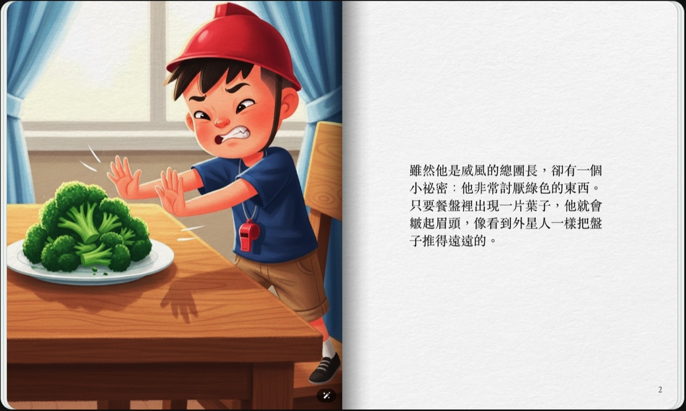
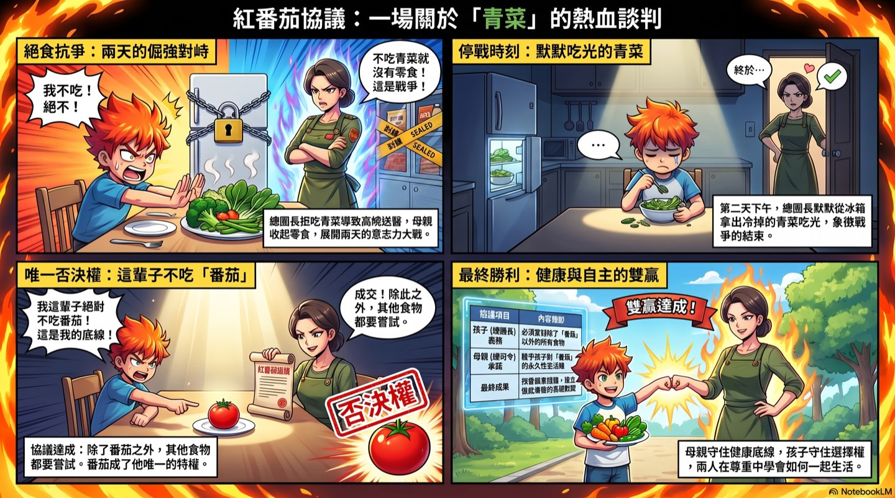

What this article is about
This article lays out the complete process of the "Parent-Child Storytelling AI Workshop," an event I ran together with Chen Yingjun, a teacher with a special-education background. Most of the parents there that day had never told a story, written a script, or made a picture book or poster. Two hours later, every one of them had turned their own family's story into something they could see. The methods and prompts are all here.
· Parents whose children are already using AI, but who haven't started themselves and are looking for a gentle way in
· Anyone who wants to record everyday moments and turn them into shared parent-child memories
· Teachers and organizations who have a good method and want the people they serve to actually put it to use
· The four parenting-guidance keys behind the Red Tomato Agreement
· Two ready-to-copy prompts: one for polishing the story, one for three versions of illustration design
· The trick to live-action movie posters, and how one story grows into five finished products
Start with the Red Tomato Agreement
The workshop opened with a true story from teacher Chen Yingjun, "The Red Tomato Agreement": a child who was an extremely picky eater and would only eat meat, leaving him chronically constipated and once even in the ER in the middle of the night. The mother laid down a rule, "You have to eat your vegetables," and the child fought back with a hunger strike; the two were at a standoff for two days. After the child gave in, they sat down to negotiate. The mother said, "You're allowed one food you never have to eat for the rest of your life. That's your right." The child answered instantly: "Tomato." From then on, the tomato became the one food in his life he held veto power over, and that agreement became the most enduring understanding between mother and son.
The teacher later grew this experience into a method for guiding parent-child communication, which breaks down into four keys:
Health was the mother's non-negotiable principle. The child needed to know, first of all, that some things are serious.
Give the child the right to "never have to eat it," and he is no longer just the one being told what to do.
After the standoff, they sat down to talk, and the rule became a promise both sides were willing to keep.
In the end, what remained went beyond winning or losing: a mutual respect, an unspoken understanding that let them live together.

It works for vegetables, and it works for all kinds of parent-child tug-of-war in daily life. If the method makes sense to you but you're not sure how to apply it to your own family, this is exactly where AI can help: tell the AI where you're stuck, and let it walk you through turning the teacher's method into an agreement of your own.
Step one: Turn your own family's experience into a story
The workshop's story-polishing prompt has one key design: when there isn't enough material, the AI has to ask questions first, and is forbidden to make things up. It asks who the main character is, where the conflict lies, how the child usually handles it, how the parent handles it, how it ends, what the real difficulty is, what agreement you want to reach with your child this time, and what reinforcer the child gets in the agreement. A reinforcer can be food, stickers, or points, but it can also be being praised, being seen, having a say, or being respected.
Notice those lines in the writing requirements: don't blame the child, and the parent doesn't have to be perfect either. Beyond the finished product, this prompt also looks after the storyteller's own feelings. The full prompt can be copied in one piece from the classroom slides page.
Step two: Start with three design drafts and choose together
Once the story reads well, don't rush to generate images. Ask the AI for single-frame design drafts in three completely different styles. Each one covers which scene to draw, the composition, the emotional mood, a one-line caption for the image, and a prompt you can take straight to an image generator. Require the three styles to be genuinely different; just swapping colors doesn't count.
The choosing itself is part of the activity. Don't just ask which picture is prettiest; ask your child, "Which one looks most like the story we just told?" "Which one feels most like how you felt back then?" Choosing the image is itself another way of retelling the story.
The trick to live-action movie posters: keep the person, change only the surroundings
The high point of the workshop was making live-action movie posters from photos. The trick is a single line: don't change the person, only change what's around them. Ask the AI to keep the facial features, expression, sense of age, and real character, and to change only the clothes, setting, lighting, props, and cinematic mood. For a single subject, give three views (front, side, and back); with enough references, the AI can change the pose and still look like the real person. For a family portrait of three to five people, just take one group photo and modify it; the more people involved, the easier it is to get messy. Ask for three movie versions at once, and choose together as a family.
One story grows into five finished products
That day's demo used the same story, "The Red Tomato Agreement," to produce five completely different finished products, each with its own tool and a basic instruction:
- Storybook: use Gemini's storybook feature for interactive page-turning, with optional AI narration. Remember to specify that "the main character's appearance stays consistent throughout the book."
- Four-panel comic: use NotebookLM's infographic feature, in an energetic manga style with speech bubbles, structured as problem, events, turning point, and ending.
- Picture book: use NotebookLM's slides feature, one large watercolor illustration per page with minimal text.
- Narrated short video: use NotebookLM's video overview, with warm narration and a slowed-down pace, ending on the one line you want to give your child.
- Movie poster: use ChatGPT to composite with a real photo.

The key is to work in stages: get the story solid first, then decide which medium to turn it into. The quality is far more reliable than asking the AI to do everything in one go. And this "borrow an expert's method" technique carries over to other places: if you can't follow a parenting academy's handout, ask AI to put it into words a parent can understand; when a teacher shares a technique, ask AI to turn it into steps you can try next week for your own family's situation; let AI organize the information and options first, then bring them back to the teacher, and the discussion gets much more concrete.
In the AI era, parent-child diaries will become data
The workshop's take-home assignment is to keep a parent-child diary: note the event, the child's reaction, how the parent handled it, how it ended, and the agreement you want to try next time. It's fine if you have no idea what to make of it in the moment; just write it down.
Once the diary has built up over time, you can ask AI to help make sense of it: where the child has made progress, where they keep getting stuck, where things could be adjusted. It's fine if you don't know how to analyze it; AI organizes the material into key points first, and then you can take that organized content to a professional teacher to look at together.
How you can start: note one small, real moment first
The smallest viable start, something you can do tonight:
- Write down one real, small moment with your child today: a moment you got stuck, an agreement, a bit of progress, or a warm moment.
- Paste it into ChatGPT and use the story-polishing prompt above to shape it into a short story; if there isn't enough material, let the AI ask you.
- Ask AI for three illustration design drafts, and let your child help pick one to generate.
- Let your child change the characters and the ending, and chat about "what feels most like our family."
Starting from a single conversation, you move from practicing with a tool into co-creating as a family.